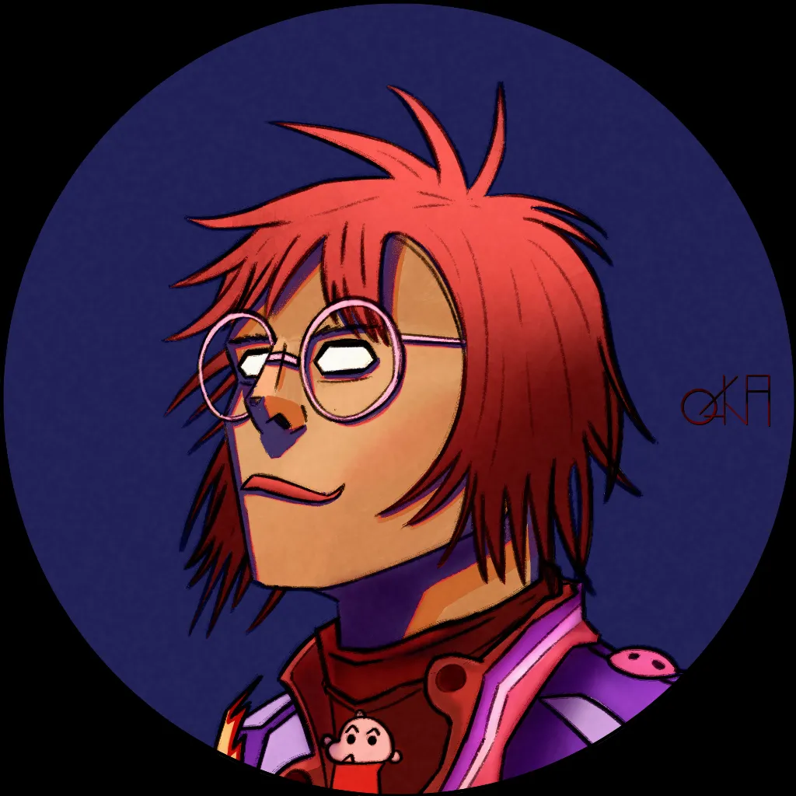
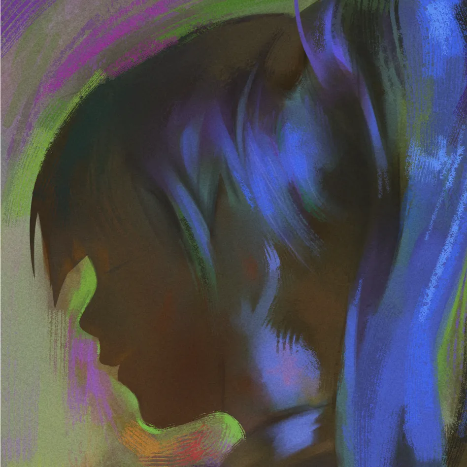

Bobe Florian · Coaching
Avis Clients
Ce que disent ceux qui ont choisi de progresser.
 Avr. 2026
Avr. 2026
Kmilou
Classroom
Je suis élève depuis quelques mois et autant dire que c'est un plaisir chaque semaine ! Florian est un super prof, pédagogue, patient et plein de bons conseils pour nous permettre de nous améliorer sans brûler les étapes. Il s'adapte à notre niveau et arrive facilement à mettre le doigt là où on ne saurait dire ce qui provoque un blocage. Les cours sont agréables et les exercices vraiment instructifs — on évolue au fur et à mesure et ses conseils sont d'une aide précieuse. Chaque dimanche est un moment sympa où l'on apprend dans une bonne ambiance !
Avr. 2026

Oska [LONK]
Classroom
Je suis très satisfait des cours donnés par Bobe Florian. Après plus d'un an d'inscription, j'ai pu voir mes compétences s'améliorer et se perfectionner de manière drastique. On apprend beaucoup de choses — que ce soit de l'anatomie jusqu'à la gestion des valeurs sur nos illustrations, création de personnage, compréhension de la composition, etc. C'est très complet et surtout les retours feedback/conseils sont super instructifs. J'ai pu apprendre beaucoup plus que je ne le pensais. En bref, personnellement, ça m'a beaucoup aidé à mieux analyser ce que j'étudie et à voir mes défauts et comment les corriger.
Avr. 2026
centipede [F&H]
Classroom
Yo ! Ça fait maintenant plusieurs mois que je suis dans la formation, je voulais partager mon expérience et donner un petit retour ! La formation m'a permis de progresser énormément, et surtout rapidement. On étudie toute forme de choses — de l'environnement à l'anatomie, en passant par les FX, la composition... En bref, c'est TRÈS complet, mais surtout structuré ! Le feedback de la semaine sur nos travaux perso est aussi un immense game changer — ça m'a permis de vraiment passer un cap, de voir les choses sous un autre angle, ou plus simplement de sortir d'un blocage. Travailler avec Florian c'est agréable (merci d'être patient avec moi quand je sature) — les échanges sont construits, instructifs, bienveillants, il est patient et compréhensif, la pédagogie est de mise, et quel plaisir c'est ! Un point important : soyez prêts à sortir de votre zone de confort, c'est ce qu'implique aller au fond des choses — mais même si c'est difficile, n'ayez crainte, ici vous êtes bien entourés.
Avr. 2026
Bam
Classroom
Florian, très bon sensei, à l'écoute et il s'adapte suivant notre besoin. Mes collègues en haut ont très bien résumé ce qu'on pense tous des cours de Florian. Je tiens tout de même à rajouter qu'il s'adapte à votre niveau et vous donne des conseils pertinents suivant votre besoin — il ne vous submergera pas d'infos superflues. NB : le seul défaut de Florian est de ne pas avoir fait un fan art de Miss Fortune.
 Avr. 2026
Avr. 2026
Toadette
Mastery
Florian m'a beaucoup aidée à progresser en dessin et à avancer vers mes objectifs. Il est très à l'écoute, avec un excellent esprit d'analyse et de critique. Il m'encourage toujours — il est très humain et toujours bienveillant, ce qui me permet de prendre confiance en moi. Et le plus important, on sent vraiment qu'il est passionné, avec une vraie envie de partager et de transmission.
Avr. 2026

Nosori
Mastery
This was a really useful second opinion when I felt lost and lacked direction on a painting. Florian gave thoughtful and helpful feedback. The session was in English, and communication was smooth and easy. Highly recommended.
Nov. 2025
Wado
Classroom
Bobe Florian est un généraliste qui maîtrise tous les aspects fondamentaux du painting et du dessin. J'ai appris beaucoup de techniques et de manières de faire — le principal reste de développer son esprit critique et son sens artistique, et c'est quelque chose qu'il vous apprendra à faire. J'arrête pour des raisons budgétaires perso, mais si vous voulez apprendre à vous développer en tant qu'artiste graphique, foncez ! En 3 mois j'ai appris énormément.
Sept. 2025
Le Zig [MS]
Classroom
Bon bah, merci mec ! En 2 semaines tu m'as vraiment aidé avec les retours et les feedbacks. C'était trop bien. Malheureusement l'été touche à sa fin — bientôt la rentrée et j'aurai plus le temps d'aller aux cours du lundi et jeudi... Je me vois contraint de partir, j'ai un peu le seum je t'avoue. Les gars rejoignez, vous le regretterez pas ! C'est vraiment un bon, et même les cours sont super chill — bon délire, ça rigole et tout. Flo est monstrueux, il trouve des retours à faire sur tes dessins que tu ne soupçonnes même pas au premier coup d'œil. Allez dans les cours !
 Avr. 2025
Avr. 2025
Samookie [WWM]
Feedback
Merci beaucoup pour tes retours, ça m'aide beaucoup !! Je note tout pour les dessins à l'avenir.
Mars 2026
Noctulyne
Mastery
Le suivi Mastery est vraiment exceptionnel. Florian prend le temps d'analyser précisément là où tu en es et construit un plan entièrement adapté à tes objectifs. J'ai débloqué en quelques semaines des problèmes que j'avais depuis des mois. Les sessions sont enregistrées, on peut tout revoir à tête reposée. Un investissement qui vaut vraiment le coup.
Nov. 2025
Tolo
Mastery
Le programme Mastery est une vraie révélation. Florian prend le temps de comprendre où tu veux aller et construit un plan sur-mesure. La progression est visible et mesurable, mois après mois. Ce qui m'a le plus marqué c'est sa capacité à identifier exactement ce qui bloque et à proposer des solutions concrètes et actionnables immédiatement. Je recommande à tous ceux qui ont un objectif clair.
Fév. 2026
Mavri
Feedback
Super rapport qualité/prix pour la formule Feedback. Les retours sont très détaillés avec des annotations directement sur mon artwork — Florian pointe exactement ce qui ne fonctionne pas et propose des corrections concrètes. En quelques feedbacks j'ai commencé à voir mes erreurs moi-même. Idéal pour progresser à son rythme sans avoir à s'engager sur des cours fixes.
Janv. 2026
Hestia
Classroom
Les cours du dimanche sont devenus incontournables dans ma semaine. Florian explique clairement ses process et répond à toutes les questions en direct — on sent vraiment qu'il aime enseigner. La communauté est bienveillante et les exercices bien ciblés. En quelques mois, j'ai progressé bien plus que je ne l'aurais cru possible seule.
Avr. 2026
HASA
Classroom
Malheureusement je n'ai eu le temps de faire qu'un seul mois dans la Classroom, mais ce dernier m'a été d'une grande aide en termes de compréhension générale du dessin. De plus, la possibilité de pouvoir demander des conseils sur ses projets perso montre que Florian porte une attention particulière à votre réussite, quel que soit votre niveau. Je recommande donc particulièrement les cours de Florian si votre but est de vous améliorer en dessin !
Fév. 2026
Ju_ste_Skazh
Feedback
J'avais des doutes avant de me lancer mais les retours de Florian sont d'une clarté redoutable. Il ne survole pas, il rentre vraiment dans le détail — composition, valeurs, anatomie, tout y passe. En quelques feedbacks, j'ai compris des choses sur ma pratique que je ne voyais pas du tout seul. Un regard extérieur expert, ça change vraiment la donne.